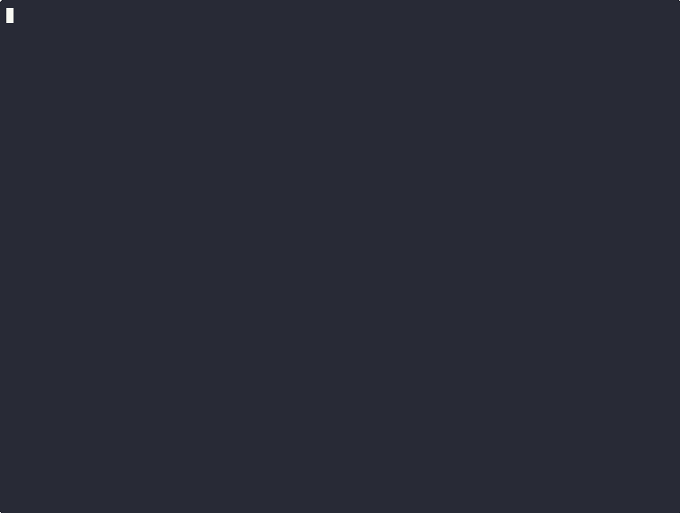
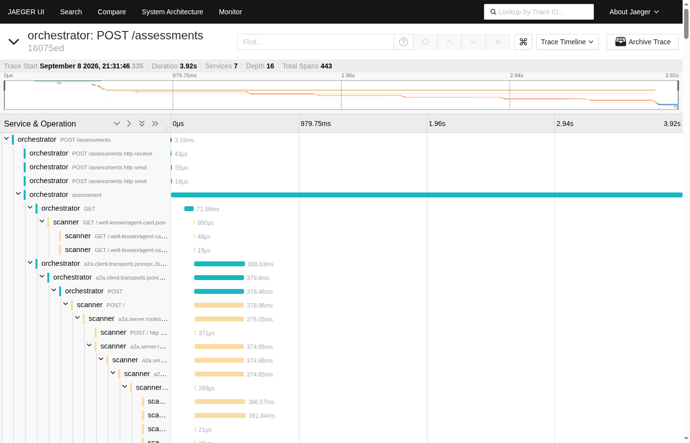
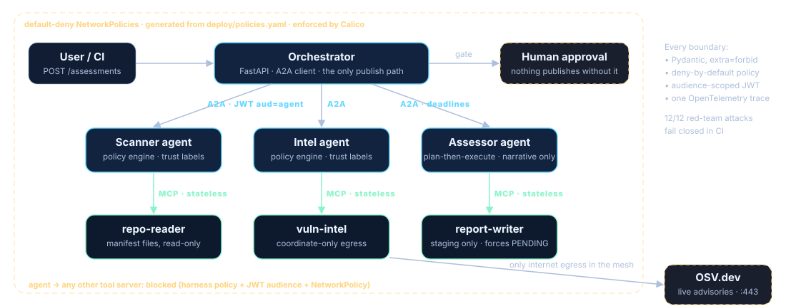

Measure Before Shipping
Agent behavior, retrieval quality, tool use, cost, latency, and safety boundaries should be testable before a workflow is trusted.
AIML Solutions builds production-grade evaluation harnesses and operating environments for teams moving from AI experiments to measurable, recoverable systems.
Hiring rather than buying? The operator's resume and public code are one click away.
Agent behavior, retrieval quality, tool use, cost, latency, and safety boundaries should be testable before a workflow is trusted.
Useful agentic systems need scoped workspaces, recovery paths, approvals, and documentation, not just prompts.
Engagements produce harnesses, scorecards, runbooks, reports, or verification artifacts that can be reviewed after delivery.

./demo/run-demo.sh builds seven containers, pulls 46 live advisories from OSV.dev for the seed repo, and halts at the human gate. Zero token spend by default.

Not a screenshot: this card is rendered from the latest cycle of IntelliClaw, an autonomous public-source signals pipeline that runs on a schedule with no API keys and no model spend. Harvest, normalize, cross-check, score, publish — the "operate the runtime" claim, observable.
Record/replay traces, tool-call assertions, trajectory diffs, cost/latency budgets, and CI gates for agent behavior drift.
Domain-specific measurement rigs for citation grounding, context precision/recall, faithfulness, and abstention behavior.
MCP/tool-use authorization checks, prompt-injection fixtures, sandbox-boundary tests, and forbidden-action assertions. Reference implementation: triage-mesh.
VPS, local, or hybrid OpenClaw/OpenCode-style environments with scoped workspaces, recovery paths, and handoff docs.
MultiClaw OS is AIML Solutions' operating model for multi-agent work: scoped runtimes, orchestrated tool use, evidence artifacts, recovery paths, and human approval gates.
A productized setup for serious operators who want a working agentic AI command environment with documentation, boundaries, and support options.
For agencies and teams that need multiple isolated workspaces for separate clients, projects, users, or research tracks.
Technical reviewer for OpenClaw AI in Production by Ken Huang, reviewing code, sequencing, reproducibility, dependencies, lifecycle, and security-boundary issues before publication.
Contributes to frontier-model evaluation workflows involving reproducible environments, task setup, transcripts, tool-calling behavior, deterministic scoring, and failure recovery review.
15+ years of financial-risk, watchlist, entity-resolution, SQL, Python, and data-quality work inform the focus on provenance, evaluation, auditability, and operational discipline.
Public materials use sanitized examples. Private platform details, credentials, paid-task specifics, and client-sensitive information are excluded.
Agentic AI solutions engineer and technical reviewer based in Reno, NV. Operates hardened VPS-hosted OpenClaw/OpenCode-style multi-agent runtimes, contributes to Snorkel AI evaluation workflows, and brings 15+ years of regulated data engineering experience.